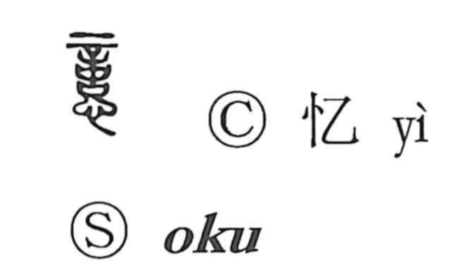

憶

Uncategorized
Kun: omou, oboeru | On: oku
memory ・ to remember ・ to recall ・ to think
Explanation
Shirakawa reads 憶 as a phono-semantic character built on the phonetic 意. The graph 意 itself unites 音 “sound” and 心 “heart”: 音 evokes the faint sound by which the gods, in the stillness of night, signal their response to prayer and inquiry, and so 意 and 憶 depict the heart pondering and discerning that divine message. From this inner act of weighing and recollection, 憶 comes to mean remembering what one has experienced and calling back what was learned—hence its use for “to think” and especially “to remember.” Related characters such as 億 and 臆 share the same phonetic 意, with 臆 conveying the allied sense of cautious assessment, guessing, and inference.